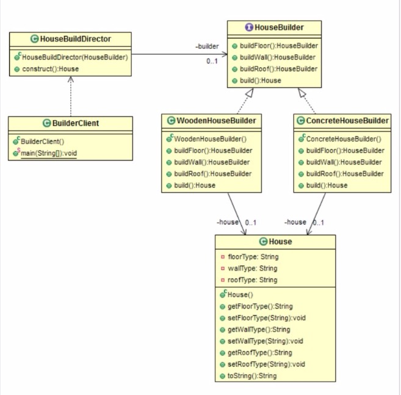

Builder(建造者)
使用场景
- 当需要通过几个步骤创建对象时候，避免处理不一致的对象
- 避免过多的构造函数参数
- 构造一个应该是不可变的对象
- 封装完整的创建逻辑
目的
将复杂对象的构造与其表示分开，以便相同的构造过程可以创建不同的表示。组件
- Builder类指定用于创建Product对象的部分的抽象接口
- ConcreteBuilder通过实现Builder接口构建并组合产品的各个部分，它定义并跟踪其创建的表示，并提供用于保存产品的界面
- Director类使用Builder接口构造复杂对象
- Product表示正在构建的复杂对象
结构体

代码实现
1. Define the Product (House) that gets assembled in the builder pattern.
package me.chunsheng.gof.builder;
/**
* Created by wei_spring on 2019/5/12.
*/
public class House {
private String floorType;
private String wallType;
private String roofType;
public String getFloorType() {
return floorType;
}
public void setFloorType(String floorType) {
this.floorType = floorType;
}
public String getWallType() {
return wallType;
}
public void setWallType(String wallType) {
this.wallType = wallType;
}
public String getRoofType() {
return roofType;
}
public void setRoofType(String roofType) {
this.roofType = roofType;
}
public String toString() {
return new String("\nConstructing House \n FloorType: " + floorType
+ "\n WallType: " + wallType + "\n RoofType: " + roofType);
}
}
2. Define the Builder interface (or abstract class) along with Concrete Builders. The Builder interface contains methods for the step by step construction of the product. It also has a build method for retrieving the product object.
package me.chunsheng.gof.builder;
/**
* @author wei_spring
* @version 2019-05-19 :17:55
* @see .
*/
public interface HouseBuilder {
public HouseBuilder buildFloor();
public HouseBuilder buildWall();
public HouseBuilder buildRoof();
public House build();
}
3. Concrete Builders implement the Builder interface. A Concrete Builder is responsible
for creating and assembling a Product object. Different Concrete Builders create and
assemble Product objects differently.
package me.chunsheng.gof.builder;
/**
* @author wei_spring
* @version 2019-05-19 :17:56
* @see .
*/
public class ConcreteHouseBuilder implements HouseBuilder {
private House house;
public ConcreteHouseBuilder() {
house = new House();
}
@Override
public HouseBuilder buildFloor() {
house.setFloorType("concrete");
return this;
}
@Override
public HouseBuilder buildWall() {
house.setWallType("concrete");
return this;
}
@Override
public HouseBuilder buildRoof() {
house.setRoofType("concrete");
return this;
}
@Override
public House build() {
return house;
}
}
package me.chunsheng.gof.builder;
/**
* @author wei_spring
* @version 2019-05-19 :17:57
* @see .
*/
public class WoodenHouseBuilder implements HouseBuilder {
private House house;
public WoodenHouseBuilder() {
house = new House();
}
@Override
public HouseBuilder buildFloor() {
house.setFloorType("wood");
return this;
}
@Override
public HouseBuilder buildWall() {
house.setWallType("wood");
return this;
}
@Override
public HouseBuilder buildRoof() {
house.setRoofType("wood");
return this;
}
@Override
public House build() {
return house;
}
}
4. A Director object is responsible for constructing a Product. It does this via the Builder
interface to a Concrete Builder. It constructs a Product via the various Builder methods. The director class ensures that all the required operations are performed before the object is returned to the client in a 'consistent' state.
package me.chunsheng.gof.builder;
/**
* @author wei_spring
* @version 2019-05-19 :18:06
* @see .
*/
public class HouseBuildDirector {
private HouseBuilder builder;
public HouseBuildDirector(final HouseBuilder builder) {
this.builder = builder;
}
public House construct() {
/* call the necessary methods and return the consistent object*/
return builder.buildFloor().buildWall().buildRoof().build();
}
}
5. The client code. The Client uses different builder objects to create different
types of products. However, the construction process is same.
package me.chunsheng.gof.builder;
/**
* @author wei_spring
* @version 2019-05-19 :18:07
* @see .
*/
public class BuilderClient {
public static void main(final String[] arguments) {
/* Construct a concrete house */
HouseBuilder builder = new ConcreteHouseBuilder();
HouseBuildDirector carBuildDirector = new HouseBuildDirector(builder);
System.out.println(carBuildDirector.construct());
/* Construct a wooden house */
builder = new WoodenHouseBuilder();
carBuildDirector = new HouseBuildDirector(builder);
System.out.println(carBuildDirector.construct());
}
}
Output
Constructing House
FloorType: concrete
WallType: concrete
RoofType: concrete
Constructing House
FloorType: wood
WallType: wood
RoofType: wood
优点
- 构造对象可以由Director控制
- 在必须完成许多操作来构建对象时很有用
- 避免伸缩构造模式
缺点
- 如果需要可变对象，则不合适
真实世界例子
建造房屋 - 我们需要告诉建筑师我们想要什么作为建筑的一部分。 然后，建筑师设计并建造建筑物。 只有在所有内容都实施后，它才会被移交。 我们没有“部分”建造房屋（这是不安全的）。
Java SDK 例子
- java.lang.StringBuilder append()
- java.lang.StringBuffer append()
- java.nio.ByteBuffer put()
- javax.swing.GroupLayout.Group addComponent()
- java.lang.Appendable implementations